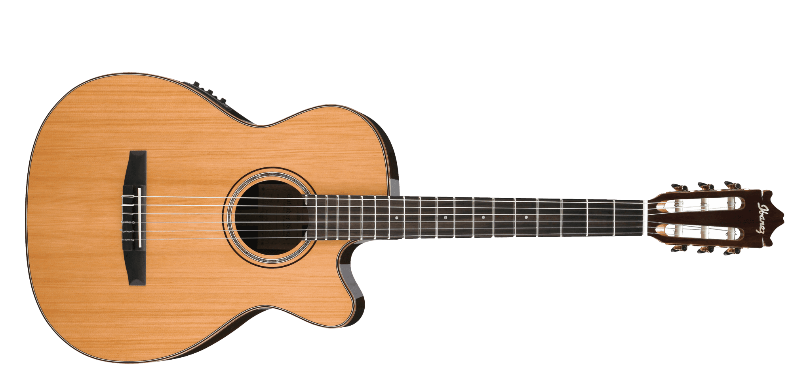
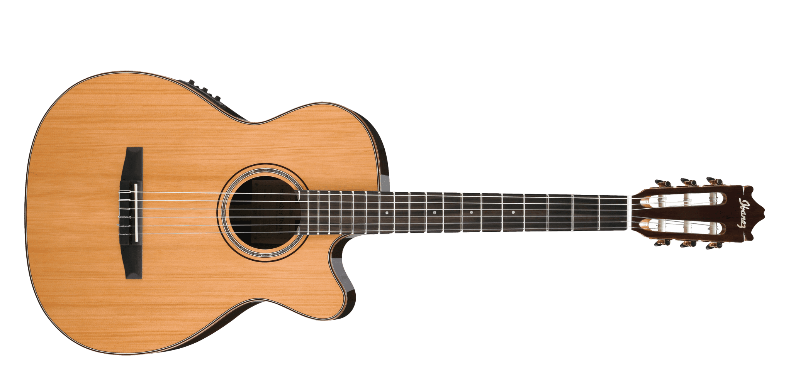

-Hobbies-


Painting

Painting is a captivating hobby that allows me to express my creativity and emotions on canvas. Whether I'm using acrylics, watercolors, or oils, the process of mixing colors and applying brushstrokes brings me a sense of joy and tranquility. I often draw inspiration from nature, capturing landscapes or the delicate details of flowers. Exploring different techniques and experimenting with various styles helps me grow as an artist and continuously challenges my skills. The satisfaction I feel when completing a painting is unparalleled, as it represents a tangible manifestation of my imagination.
Photography
Photography has become an integral part of my life, as I love to capture and preserve moments that evoke emotions or tell compelling stories. Armed with my camera, I embark on journeys through the lens, exploring various subjects and perspectives. From breathtaking landscapes to candid portraits, photography allows me to freeze time and immortalize fleeting beauty. The technical aspects, such as composition, lighting, and post-processing, push me to constantly improve my skills. Each click of the shutter opens up a new world of possibilities and allows me to see the world from a different angle.
 



Playing the guitar
Playing the guitar has been a beloved hobby of mine for many years. From the moment I strummed my first chord, I knew I had found a lifelong passion. The guitar allows me to create beautiful melodies and rhythms, expressing myself in a language that transcends words. Whether I'm playing acoustic ballads or rocking out on an electric guitar, the instrument becomes an extension of my emotions. The process of learning new songs, mastering techniques, and improvising solos is a constant source of challenge and fulfillment. The guitar has become my faithful companion, providing solace during quiet moments and an outlet for my creativity.


Anime
Watching anime has become a delightful pastime that transports me to extraordinary worlds filled with captivating stories and vibrant characters. The artistry and attention to detail in anime are truly remarkable, with stunning visuals and imaginative narratives that capture my imagination. From epic adventures to heartwarming slice-of-life tales, anime offers a diverse range of genres that cater to all my moods and interests. Engrossing storylines, emotional depth, and thought-provoking themes often leave a lasting impact on me, fostering a sense of connection to the characters and their journeys. Each episode is a chance to dive into a different universe, experience different cultures, and explore complex human emotions.